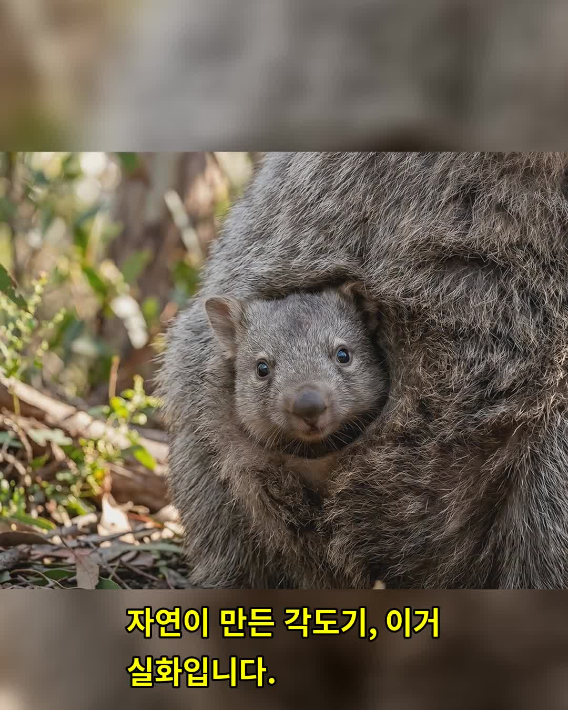
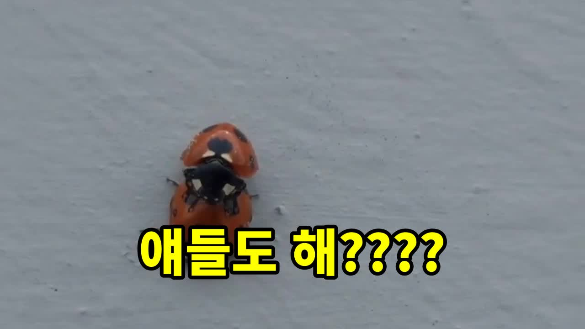
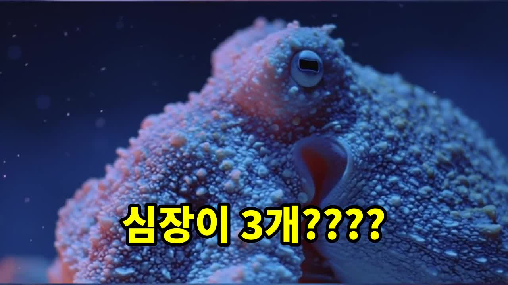

블로그
영상 콘텐츠를 만들면서 함께 쌓이는 글들입니다.

자연의 마술: 웜뱃의 정육면체 응가이 글은 여러분에게 자연의 흥미진진한 비밀을 탐험하게 해줄 것입니다. 웜뱃이라는 동물에 대해 몇 가지 궁금증들을 해결하고, 그들의 응가가 어떻게...
고양이의 생존 전략: 에너지 절약 고양이는 일상생활에서 하루를 평균 13~16시간을 잠에 보냅니다. 이는 사람의 두 배 이상이며, 처음엔 게을러...
 헬스장 3개월 등록 후 안 나가는 심리와 헬스장의 진짜 사업 모델
헬스장 3개월 등록 후 안 나가는 심리와 헬스장의 진짜 사업 모델
헬스장을 이용해본 경험이 있다면, 이 글을 읽는 독자님들께 많은 공감이 느껴질 것입니다. 종종 3개월 이상 등록하지만 실제로 간 횟수가 많지 않...

무당벌레의 짝짓기와 번식 생태: 몰랐던 반전 매력이 글을 읽으실 필요가 있는 이유는 무엇일까요? 곤충과 자연에 대한 깊은 관심을 가지고 계신 분이라면, 무당벌레의 생활 방식이 궁금하실 것 같습...

문어의 심장 3개와 파란 피의 비밀이 글을 읽으시면, 여러분은 동물의 세계에 숨겨진 놀라운 사실들을 만나게 됩니다. 이 글에서는 어마어마한 3개의 심장을 가진 문어부터 깜짝 놀랄...
 홍해파리(투리톱시스 도르니이)의 생물학적 불멸: 과학자들이 찾아낸 '영생' 비결
홍해파리(투리톱시스 도르니이)의 생물학적 불멸: 과학자들이 찾아낸 '영생' 비결
많은 사람들은 생물학적으로 불가능하다고 생각하는 영생을 꿈꾸지만, 자연에선 이러한 기적 같은 현상이 실제로 일어나고 있습니다. 오늘은 홍해파리(...